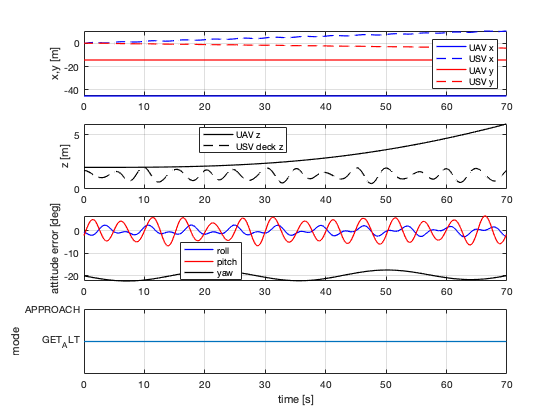
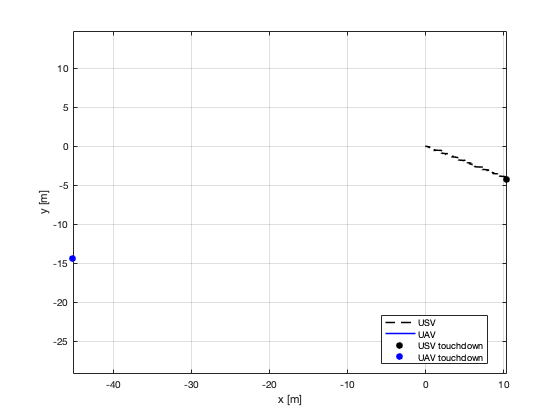

clear; clc; close all; addpath(fileparts(mfilename('fullpath'))); params = initialize_paper_parameters(); fprintf('Running MPC-FAA UAV landing simulation based on Prochazka et al. 2024...\n'); result = simulate_landing_trial(params, 1, true); plot_landing_results(result, params, 'single_trial'); save(fullfile(params.paths.results, 'single_trial_result.mat'), 'result', 'params'); fprintf('\nTouchdown summary:\n'); fprintf(' success: %d\n', result.success); fprintf(' touchdown time: %.2f s\n', result.touchdownTime); fprintf(' position deviation: %.3f m\n', result.metrics.positionDeviation); fprintf(' horizontal velocity: %.3f m/s\n', result.metrics.horizontalVelocityDeviation); fprintf(' roll deviation: %.3f deg\n', rad2deg(result.metrics.rollDeviation)); fprintf(' pitch deviation: %.3f deg\n', rad2deg(result.metrics.pitchDeviation)); fprintf(' yaw deviation: %.3f deg\n', rad2deg(result.metrics.yawDeviation));
Running MPC-FAA UAV landing simulation based on Prochazka et al. 2024... t= 4.9 mode=GET_ALTITUDE deckDistance= 0.42 horizontalError=48.07 t= 9.9 mode=GET_ALTITUDE deckDistance=-0.01 horizontalError=48.71 t= 14.9 mode=GET_ALTITUDE deckDistance= 0.28 horizontalError=49.27 t= 19.9 mode=GET_ALTITUDE deckDistance= 0.43 horizontalError=49.94 t= 24.9 mode=GET_ALTITUDE deckDistance= 0.44 horizontalError=50.64 t= 29.9 mode=GET_ALTITUDE deckDistance= 0.50 horizontalError=51.25 t= 34.9 mode=GET_ALTITUDE deckDistance= 0.74 horizontalError=51.86 t= 39.9 mode=GET_ALTITUDE deckDistance= 1.33 horizontalError=52.58 t= 44.9 mode=GET_ALTITUDE deckDistance= 1.27 horizontalError=53.26 t= 49.9 mode=GET_ALTITUDE deckDistance= 1.69 horizontalError=53.85 t= 54.9 mode=GET_ALTITUDE deckDistance= 2.61 horizontalError=54.55 t= 59.9 mode=GET_ALTITUDE deckDistance= 2.80 horizontalError=55.28 t= 64.9 mode=GET_ALTITUDE deckDistance= 3.42 horizontalError=55.90 t= 69.9 mode=GET_ALTITUDE deckDistance= 4.30 horizontalError=56.56 Touchdown summary: success: 0 touchdown time: 69.90 s position deviation: 56.561 m horizontal velocity: 0.546 m/s roll deviation: -2.560 deg pitch deviation: -1.645 deg yaw deviation: -19.927 deg

